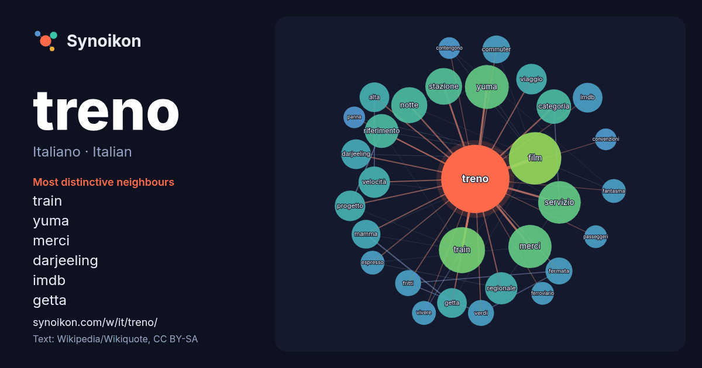

Italiano · Italian · word of the day list
treno
“train” · The words found around it in 1130 instances from Italian Wikipedia, Wikiquote.

Most distinctive neighbours
- train 41×
- yuma 38×
- merci 32×
- darjeeling 18×
- imdb 18×
- getta 17×
- notte 17×
- servizio 17×
- mamma 16×
- commuter 16×
- regionale 15×
- riferimento 15×
- categoria 15×
- fritti 14×
- stazione 13×
- fermata 13×
- velocità 13×
- viaggio 13×
- verdi 12×
- alta 12×
× = how many times more often than in general Italian Wikipedia text.
Most frequent neighbours
- film 53
- train 41
- yuma 37
- merci 36
- servizio 35
- stazione 26
- notte 25
- categoria 23
- riferimento 22
- regionale 20
- velocità 19
- progetto 18
- viaggio 18
- alta 17
- darjeeling 17
- getta 17
- imdb 17
- mamma 16
- commuter 15
- viene 15
In context
- Disambiguazione – "Treni" rimanda qui. Se stai cercando altri significati, vedi Treno (disambigua) o Treni (disambigua). Questa voce o sezione sull'argomento Wikipedia snippets · Treno
- 2024 tratto dal libro diretto da Cristina Comencini, vedi Il treno dei bambini (film). Il treno dei bambini è il terzo romanzo di Viola Ardone, pubblicato Wikipedia snippets · Il treno dei bambini
- convenzioni di Wikipedia. Un treno merci è un treno destinato esclusivamente o prevalentemente al trasporto di merci. Un treno merci è costituito da un mezzo Wikipedia snippets · Treno merci
- Il treno ha fischiato è una novella di Luigi Pirandello, appartenente alla raccolta Novelle per un anno e pubblicata il 22 febbraio 1914. Il protagonista Wikipedia snippets · Il treno ha fischiato
- convenzioni di Wikipedia. Segui i suggerimenti del progetto di riferimento. Il treno dei dinosauri (Dinosaur Train) è una serie animata statunitense di genere Wikipedia snippets · Il treno dei dinosauri
- stai cercando il singolo dei Tiromancino, vedi L'ultimo treno della notte (singolo). L'ultimo treno della notte è un film italiano del 1975 diretto da Aldo Wikipedia snippets · L'ultimo treno della notte
- contengono il titolo. Il treno – romanzo di Georges Simenon del 1961 Il treno – film drammatico di John Frankenheimer del 1964 Il treno – film horror di Jeff Wikipedia snippets · Il treno
- Il treno (The Train) è un film del 1964 diretto da John Frankenheimer, tratto dal romanzo Le front de l'art di Rose Valland. Agosto 1944, Parigi. Il colonnell … Wikipedia snippets · Il treno (film 1964)
More Italian words
Precomputed on 2026-10-09 with default settings (±5 words, medium corpus). The interactive map can refresh it with live data.